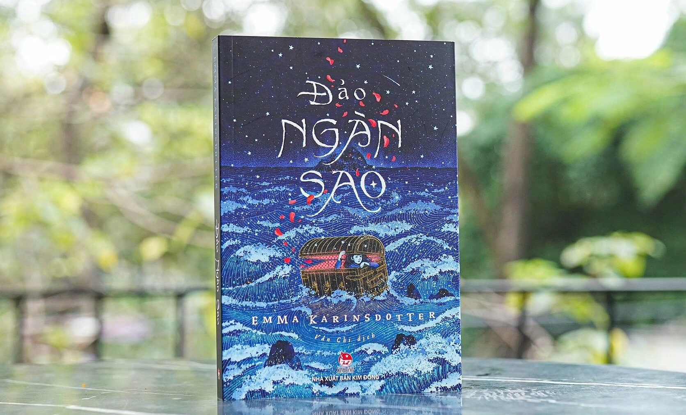

Mình yêu cuốn ''Đảo ngàn sao'' vì đã chạm vào một góc rất sâu, lạ lùng trong tâm hồn mình, nơi những cảm xúc không cần gọi tên. Mình là một đứa con gái luôn tìm kiếm những thế giới khác trong trang sách. Có những cuốn mình đọc xong là hiểu ngay, ai tốt ai xấu, bài học là gì... Nhưng Đảo ngàn sao của Emma Karinsdotter lại không như thế. Có lẽ người lớn đọc cuốn này sẽ có những suy nghĩ sâu xa hơn, sẽ nói về "ẩn dụ" hay "chữa lành". Còn với một đứa con gái lớp 7 như mình, có lẽ Đảo ngàn sao đơn giản là một giấc mơ buồn nhưng đẹp đẽ nhất mình từng gặp. Mình yêu cái cảm giác không - hiểu - rõ ấy. Vì không hiểu rõ, nên mình cứ mãi day dứt. Vì mơ hồ, nên nó cứ ám ảnh. Mình tìm thấy tác phẩm vào một ngày mưa rả rích. Bìa sách màu xanh thẫm với những cánh hồng sắc đỏ bay ra từ chiếc rương đã hút mắt mình ngay lập tức. Câu chuyện bắt đầu về cô bé Tigris, người vừa mất mẹ và sống cùng bố trong một nỗi buồn lặng lẽ. Rồi Tigris chui vào một chiếc hộp đồ cũ và... bùm! Cô bé đến một hòn đảo kỳ lạ. Nói thật, đến tận bây giờ, mình vẫn tự hỏi: Hòn đảo ấy có thật không? Hay đó chỉ là giấc mơ của Tigris? Do Tigris nhớ mẹ quá nên tưởng tượng ra? Tác giả chẳng giải thích rõ ràng gì cả. Mọi thứ trên đảo hư hư thực thực. Ở đó có Leo, có những sinh vật làm từ các chòm sao, có cả những điều phi lý đến mức khó tin. Nếu là một bài kiểm tra Văn trên lớp, chắc mình sẽ bối rối lắm vì không biết phân tích ý nghĩa của hình ảnh này, chi tiết kia. Nhưng vì đây là cuốn sách mình yêu, nên mình cho phép mình không cần hiểu. Mình chỉ cần cảm nhận thôi. Nhỉ...? Cảm giác khi đọc cuốn sách này giống như đang đi lạc trong một màn sương mù màu bạc. Giống như đoạn Tigris phải lựa chọn giữa việc ở lại hòn đảo mãi mãi hay quay về với bố. Lúc ấy, mình cảm thấy sợ. Sợ vì cái ranh giới giữa sự sống và cái chết, giữa thực tại và ảo ảnh nó mỏng manh quá. Mình không hiểu hết thông điệp mà tác giả muốn gửi gắm là gì. Là hãy chấp nhận sự thật ư? Hay là cứ mãi sống trong hy vọng? Mình không biết. Mình chỉ thấy tim đập thình thịch, vừa muốn Tigris ở lại để hạnh phúc, vừa muốn bạn ấy quay về để bố không bị bỏ lại một mình. Cảm giác mâu thuẫn ấy làm mình bứt rứt, khó chịu, nhưng cũng lại là thứ khiến mình không thể rời mắt khỏi trang sách. Đảo ngàn sao không có những siêu anh hùng đánh nhau đùng đoàng, cũng không có những phép thuật hú hồn Thần Hộ Mệnh. Phép thuật trong cuốn sách này là nỗi nhớ. Nó khiến mình nhận ra rằng, hóa ra nỗi nhớ có thể kiến tạo nên cả một thế giới. Gấp sách lại rồi, mình vẫn thấy như có một màn bụi sao dính trên đầu ngón tay. Cuốn sách không cho mình một câu trả lời cụ thể nào về sự mất mát, nhưng nó tặng mình một cảm giác ủi an. Rằng đâu đó trên bầu trời kia, giữa hàng vạn ngôi sao, vẫn có một ngôi sao luôn dõi theo mình. Mình yêu cuốn sách này, không phải vì nó dạy mình điều gì, mà vì nó đã chạm vào một góc rất sâu, rất lạ lùng trong tâm hồn mình - nơi mà những cảm xúc không cần gọi tên cứ thế lặng lẽ tỏa sáng. Ngô Ngọc Khánh An Học sinh lớp 7 ← Quay lại